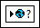

Use global variables to access and pass data among several VIs that run simultaneously. Global variables are built-in LabVIEW objects. When you create a global variable, LabVIEW automatically creates a special global VI, which has a front panel but no block diagram. Add controls and indicators to the front panel of the global VI to define the data types of the global variables it contains. In effect, this front panel is a container from which several VIs can access data.
For example, suppose you have two VIs running simultaneously. Each VI contains a While Loop and writes data points to a waveform chart. The first VI contains a Boolean control to terminate both VIs. You must use a global variable to terminate both loops with a single Boolean control. If both loops were on a single block diagram within the same VI, you could use a local variable to terminate the loops.
Select a global variable, shown as follows, from the Functions palette and place it on the block diagram.

Double-click the global variable node to display the front panel of the global VI. Place controls and indicators on this front panel the same way you do on a standard front panel.
LabVIEW uses owned labels to identify global variables, so label the front panel controls and indicators with descriptive owned labels.
You can create several single global VIs, each with one front panel object, or if you want to group similar variables together, you can create one global VI with multiple front panel objects.
After you finish placing objects on the global VI front panel, save it and return to the block diagram of the original VI. You must then select the object in the global VI that you want to access. Click the global variable node and select a front panel object from the shortcut menu. The shortcut menu lists all the front panel objects in the global VI that have owned labels. You also can right-click the global variable node and select a front panel object from the Select Item shortcut menu.
If you create a copy of a global variable node, LabVIEW associates the new global variable node with the global VI of the variable node you copy it from.
|
Note�� (MathScript RT Module) You also can use the global function to create global variables in LabVIEW MathScript. Use global variables in MathScript to access and pass data between the LabVIEW MathScript Window and a MathScript Node or between two MathScript Nodes. The global function generates global variables in a separate context than the global variables in LabVIEW. For example, if you use the global function to generate the global variable a in MathScript, you also can create a different global variable a in LabVIEW. |